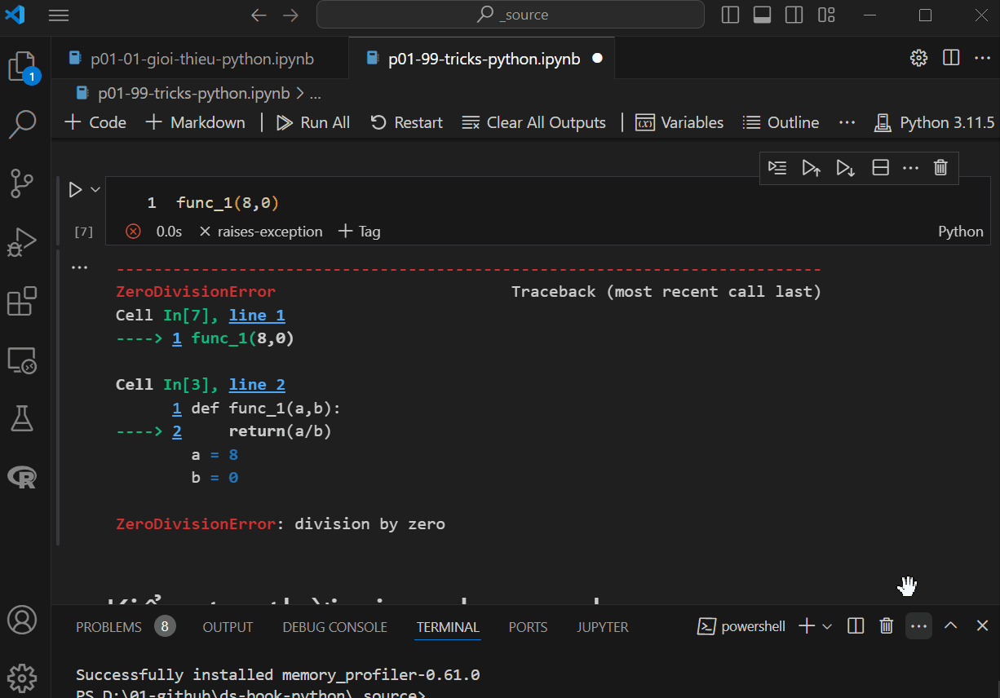
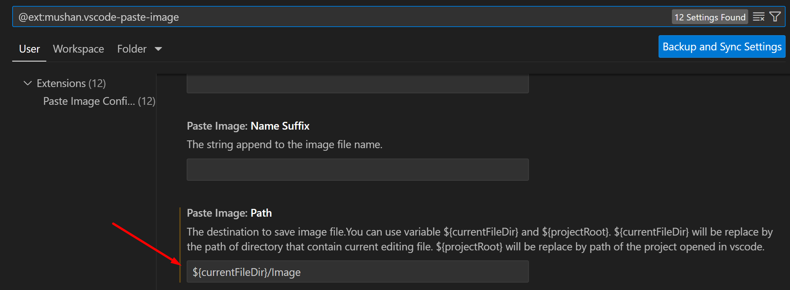

12. Các mẹo trong Python#
12.1. Câu lệnh trong điều kiện#
Trong python, các câu lệnh điều kiện if...else có thể viết ngắn gọn và đơn giản như sau:
# Don't
def factorial(n):
if n == 0:
return 1
else:
return n * factorial(n-1)
# Do
def factorial(n):
return 1 if n == 0 else n * factorial(n-1)
Ví dụ 2
# Dont
def __init__(self, name, contents=None):
self.name = name
if contents == None:
contents = []
self.pouch_contents = contents
# Do
def __init__(self, name, contents = None):
self.name = name
self.pouch_contents = [] if contents = None else contents
12.2. Any vs All#
Hàm any trong trong python cho phép trả ra kết quả nếu 1 trong các điều kiện là TRUE
any(x > 2 for x in [1, 2, 4])
True
Khác với any, all sẽ kiểm tra tất cả điều kiện
all(x > 2 for x in [1, 2, 4])
False
12.3. Debug#
Sử dụng %xmode hoặc %debug để tìm lỗi. Xem ví dụ dưới đây
def func_1(a,b):
return(a/b)
func_1(8,3)
2.6666666666666665
func_1(7,0)
---------------------------------------------------------------------------
ZeroDivisionError Traceback (most recent call last)
Cell In[5], line 1
----> 1 func_1(7,0)
Cell In[3], line 2, in func_1(a, b)
1 def func_1(a,b):
----> 2 return(a/b)
ZeroDivisionError: division by zero
Sử dụng %xmode cho phép hiển thị thêm các thông tin lỗi trong jupyter notebook
%xmode Verbose
Exception reporting mode: Verbose
func_1(8,0)
---------------------------------------------------------------------------
ZeroDivisionError Traceback (most recent call last)
Cell In[7], line 1
----> 1 func_1(8,0)
Cell In[3], line 2, in func_1(a=8, b=0)
1 def func_1(a,b):
----> 2 return(a/b)
a = 8
b = 0
ZeroDivisionError: division by zero
12.4. Kiểm tra thời gian chạy code#
Python cho phép sử dụng profiling. Hai magic command hay dùng nhất là %time & %timeit.
%timeit cho phép hiển thị thông tin chính xác với nhiều thông số hơn.
%time sum(range(100))
CPU times: total: 0 ns
Wall time: 0 ns
4950
%timeit sum(range(100))
711 ns ± 18.5 ns per loop (mean ± std. dev. of 7 runs, 1,000,000 loops each)
12.5. Profiling với memory#
cài đặt memory_profiler trên với anaconda prompt
pip install memory_profiler
%load_ext memory_profiler
def sum_of_lists(N):
total = 0
for i in range(5):
L = [j ^ (j >> i) for j in range(N)]
total += sum(L)
return total
%memit sum_of_lists(10000)
peak memory: 85.32 MiB, increment: 1.11 MiB
sum_of_lists(10000)
211713248
12.6. Phân biệt các dấu gạch dưới trong Python#
Dâu gạch dưới _ có nhiều ý nghĩa khác nhau trong Python và có nhiều cách sử dụng. Ta cần phải nắm vững để có thể hiểu cách sử dụng của python
12.6.1. Lưu giá trị từ trước#
Cách này chỉ sử dụng với Ipython - dấu - cho phép hiển thị lại giá trị gần nhất trên Python REPL
x = 10
_
211713248
12.6.2. Bỏ qua giá trị không cần thiết#
Ta có thể dùng _ để bỏ qua các giá trị không muốn gán
a,_, c = (1, 2, 3)
a, c
(1, 3)
# Bor qua cùng lúc nhiều giá trị
a, *_, b = (1,2,3,4,5,6,7)
print(a); print(b)
1
7
12.6.3. Sử dụng trong loop#
Sử dụng như một biến tạm
for _ in range(5):
print(_)
0
1
2
3
4
languages = ['R', 'Python', 'Scala']
for _ in languages:
print(_)
R
Python
Scala
12.6.4. Phân cách hàng nghìn#
x = 1_000_000
print(x)
1000000
12.6.5. Đặt tên có chứa _#
Trong Python, có 4 cách đặt tên chứa _:
Một dấu đằng trước:
_nameMột dấu đằng sau:
name_Hai dấu đằng trước:
__nameHai dấu ở hai bên:
__name__
12.6.5.1. Một dấu đằng trước#
Cho phép bỏ qua hàm khi import
# Tạo file my_functions.py
## filename: my_functions.py
## Ví dụ để hiểu rõ chức năng của dấu gạch dưới trong python
def func():
return "Anh Hoang Duc"
def _private_func():
return 7
#| eval: false
from my_functions import *
#| eval: false
func()
'Anh Hoang Duc'
_private_func()
---------------------------------------------------------------------------
NameError Traceback (most recent call last)
Cell In[25], line 1
----> 1 _private_func()
NameError: name '_private_func' is not defined
Trong cách import trên, hàm _private_func đã không được import vào trong môi trường làm việc. Ta có thể import vào môi trường làm việc như sau
import my_functions
my_functions.func()
my_functions._private_func()
7
12.6.5.2. Gạch dưới cuối tên#
Với cách dùng này, ta sử dụng _ khi dùng làm keyword
Câu lệnh dưới đây sẽ hiển thị tên lỗi
def function(class):
return print(class)
Cell In[27], line 1
def function(class):
^
SyntaxError: invalid syntax
def function(class_):
return print(class_)
function(9)
9
12.6.5.3. Hai dấu gạch trước và sau#
Python sử dụng 2 dấu gạch dưới trước và sau với các hàm đặc biệt khi khai báo class như __init__.
Trong trường hợp sử dụng 2 dấu gạch dưới, sẽ khai báo các method hoặc attribute sẽ mang tính cá nhân và bảo mật hơn
class MyClass:
def __init__(self):
self.__private_variable = 42
def __init__(self):
self._not_private = 15
def __private_method(self):
print("This is a private method")
def not_private(self):
print("This is not private")
# Thử truy cập biến hoặc phương thức từ bên ngoài lớp
obj = MyClass()
print(obj)
<__main__.MyClass object at 0x000002B98A81DF50>
# Attribute
obj._not_private
15
# Method
obj.not_private()
This is not private
Khi dùng 2 dấu gạch dưới trước tên của method hoặc attribute sẽ khiến không thể truy cập được vào các thuộc tính và method sẵn có này
print(obj.__private_variable) # Sẽ gây lỗi AttributeError
obj.__private_method() # Sẽ gây lỗi AttributeError
---------------------------------------------------------------------------
AttributeError Traceback (most recent call last)
Cell In[34], line 1
----> 1 print(obj.__private_variable) # Sẽ gây lỗi AttributeError
obj = <__main__.MyClass object at 0x000002B98A81DF50>
2 obj.__private_method() # Sẽ gây lỗi AttributeError
AttributeError: 'MyClass' object has no attribute '__private_variable'
Lưu ý: Việc hiểu chính xác cách sử dụng của các dấu _ sẽ cho phép chúng ta hiểu và sử dụng python nhanh chóng hơn
12.7. List object trong môi trường làm việc#
Hiển thị tất cả các biến trong môi trường: sử dụng %whos
x, y = 7, 'test'
%whos
Variable Type Data/Info
------------------------------------
MyClass type <class '__main__.MyClass'>
a int 1
b int 7
c int 3
func function <function func at 0x000002B989985BC0>
func_1 function <function func_1 at 0x000002B989985DA0>
function function <function function at 0x000002B98A82F380>
languages list n=3
my_functions module <module 'my_functions' fr<...>source\\my_functions.py'>
obj MyClass <__main__.MyClass object at 0x000002B98A81DF50>
sum_of_lists function <function sum_of_lists at 0x000002B98A01A200>
x int 7
y str test
Sử dụng %who_ls data_type
import pandas as pd
df = pd.DataFrame({'x' : [1,2,3]})
x = [1,2,3]
%who_ls DataFrame
['df']
#| eval: false
%who_ls list
['languages', 'x']
#| eval: false
%who_ls DataFrame list
['df', 'languages', 'x']
12.8. Hiển thị nhiều kết quả trong 1 cell#
Trong jupyter notebook, kết quả trong 1 cell chỉ được hiển thị 1 lần. ta có thể khắc phục như sau
from IPython.core.interactiveshell import InteractiveShell
InteractiveShell.ast_node_interactivity = "all"
x, y = 7, 8
x
y
x * y
7
8
56
12.9. Assign string thành object#
Problem: Tạo cùng lúc nhiều object, gán mỗi object với 1 giá trị
import numpy as np
df_name = ["df1", "df2", "df3"]
for i in df_name:
globals()[i] = np.random.random(1)
print(i)
print(eval(i))
df1
[0.97386133]
df2
[0.53453316]
df3
[0.46273654]
for i in df_name:
del globals()[i]
12.10. Evaluation#
Tương tự như R, Python có thể sử dụng evaluation để thực hiện lập trình đơn giản
my_df = 7
eval('my_df')
7
12.11. Xóa toàn bộ environment#
# Xóa dataframe
all_var = %who_ls DataFrame
for i in all_var:
print(globals()[i])
x
0 1
1 2
2 3
for _ in all_var:
del globals()[_]
%who_ls
['InteractiveShell',
'MyClass',
'a',
'all_var',
'b',
'c',
'df_name',
'func',
'func_1',
'function',
'i',
'languages',
'my_df',
'my_functions',
'np',
'obj',
'pd',
'sum_of_lists',
'x',
'y']
#| eval: false
# Delete all
%reset -f
12.12. Lưu code từ cell thành file#
Sử dụng magic command %%writefile
%%writefile 09.test_script/03_test_script.py
def joke():
print('My job')
12.13. Mở một loạt file text và sửa nội dung#
def replace_md(file, find, replace):
with open(file, encoding="utf8") as f:
s = f.read()
s = s.replace(find, replace)
with open(file,'w', encoding="utf8") as f:
f.write(s)
import glob, os
os.chdir("../_book")
for file in glob.glob("*.md"):
replace_md(file = file, find = '<img src="', replace = '
replace_md(file = file, find = '" width="672" />', replace = ')\n\n')
12.14. Chạy file python từ bat#
python script.py
12.15. Auto format#
Ta có thể sử dụng package black để auto format lại các file trong python.
Tất cả string để lại dưới dạng ngoặc kép (double quoted)
Loại các khoảng trắng không cần thiết
Chuẩn hóa các đoạn code dài
black script.py
12.16. Làm việc với các file trong máy tính#
Python rất mạnh trong việc xử lý các vấn đề liên quan đến các file trong máy tính. Hai thư viện được dùng nhiều khi xử lý các file trong máy tính là glob và os
import os, glob
12.16.1. Liệt kê các file theo định dạng#
file_name = []
for extension in ['*.png', '*.py']:
file_name = file_name + glob.glob(extension)
file_name
['boxplot.png',
'chart.png',
'my_figure.png',
'seaborn_chart.png',
'conf.py',
'flask-api.py',
'my_functions.py',
'untitled.py']
12.16.2. Chèn thêm prefix vào tất cả file_name#
def change_name(file_extension=['*.PNG', '*.JPG', '*.JPEG'], prefix='test'):
"""
Function to add a prefix in name of files within a folder. It will help organizing files better,
especially Images for markdown files without changing much in source code.
"""
import re, glob, os
import numpy as np
file_name_full = []
for ext in file_extension:
file_name_full = file_name_full + glob.glob(ext)
file_name = []
extension = []
for file in file_name_full:
file_name = file_name + [os.path.splitext(file)[0]]
extension = extension + [os.path.splitext(file)[1]]
extension = np.array(extension)
file_name = np.array(file_name)
# New name, adding prefix
new_name = [prefix + str(file) + str(ext) for file, ext in zip(file_name, extension)]
print(new_name)
# Rename
# [os.rename(old_name, new_name) for old_name, new_name in zip(file_name_full, new_name)]
change_name(prefix = "hello-")
['hello-boxplot.png', 'hello-chart.png', 'hello-my_figure.png', 'hello-seaborn_chart.png']
12.16.3. Rename 1 file#
[os.rename(old_name, new_name) for old_name, new_name in zip(file_name_full, new_name)]
12.16.4. Mở 1 file text, thay đổi và save#
file = "my_file.txt"
import re
with open(file, encoding="utf8") as f:
s = f.read() # Read content của file f, lưu thành s
s = s.strip() # Remove khoảng trắng đầu và cuối
with open(file,'w', encoding="utf8") as f:
f.write(s) # Ghi nội dung của file f dưới dạng s
12.17. Giả lập dữ liệu#
Trong quá trình phân tích, ta có thể tạo thêm các dữ liệu giả lập nhanh chóng từ package faker
pip install faker
# Tạo fake name
from faker import Faker
fake = Faker()
# fake name
fake.name()
'Jessica Collins'
# fake ip4
fake.ipv4()
'213.41.0.188'
# fake email
fake.email()
'vincent71@example.org'
Ta có thể tạo các dữ liệu giả lập như sau
from faker import Faker
# Generate synthetic client data
def generate_client_data(num_clients=100):
clients = []
fake = Faker()
for client_num in range(1, num_clients + 1):
client = {
"client_number": client_num,
"name": fake.name(),
"email": fake.email(),
"phone_number": fake.phone_number(),
"bulding_number": fake.building_number(),
"street_name": fake.street_name(),
"postcode": fake.postcode(),
"city": fake.city(),
"state": fake.state(),
"birth_date": fake.date_of_birth(minimum_age=18, maximum_age=90).strftime('%Y-%m-%d'),
"credit_card_number" : fake.credit_card_number(card_type='mastercard'),
}
clients.append(client)
return clients
import pandas as pd
df1 = pd.DataFrame(generate_client_data(num_clients=100))
df1.head()
| client_number | name | phone_number | bulding_number | street_name | postcode | city | state | birth_date | credit_card_number | ||
|---|---|---|---|---|---|---|---|---|---|---|---|
| 0 | 1 | Amy Chan | susan47@example.net | +1-763-855-2246x872 | 394 | Gomez Viaduct | 41300 | Jacobstad | Ohio | 1948-09-10 | 2575924653854473 |
| 1 | 2 | Sherry Ellis | sydney92@example.org | +1-287-305-9269 | 06080 | Allen Lodge | 69113 | Hammondhaven | South Carolina | 1996-03-15 | 2686768991015313 |
| 2 | 3 | Mary Fox | emilycook@example.net | 798-681-6666 | 51986 | Wright Point | 07059 | Lake Gary | Colorado | 1984-02-18 | 2660393172684470 |
| 3 | 4 | John Adams | hernandezlinda@example.org | 248.417.5017x67199 | 4008 | Erin Light | 44205 | Marieton | Florida | 1934-09-04 | 5104961183620977 |
| 4 | 5 | Dr. Cassandra Johns | jennifer36@example.net | 8654081012 | 598 | Randolph Passage | 26622 | Tranport | Tennessee | 1967-01-02 | 2702132279100042 |
12.18. Enumerate#
Trong python, ta có thể sử dụng hàm enumerate để liệt kê thay vì dùng vòng lặp và trả về các counter
lista = ['a','b','c','d','e']
count = 0
for l in lista:
print('Index:', count,' Value:', l)
count+=1
Index: 0 Value: a
Index: 1 Value: b
Index: 2 Value: c
Index: 3 Value: d
Index: 4 Value: e
# Khi sử dụng enumerate
lista = ['a','b','c','d','e']
for count, l in enumerate(lista):
print('Index:', count,' Value:', l)
Index: 0 Value: a
Index: 1 Value: b
Index: 2 Value: c
Index: 3 Value: d
Index: 4 Value: e
12.19. Chạy tất cả các cells trong notebook, bỏ qua lỗi#
Khi chạy lại code trong notebook, ta sẽ gặp trường hợp có 1 cell bị lỗi (có thể do cố tình để lỗi), thì các cell ở dưới sẽ không chạy tiếp được
Để giải quyết, ta có thể add thêm tags: raises-exception vào trong cell. Khi đó, kernel sẽ tiếp tuc thực hiện câu lệnh dù có lỗi tại 1 cells
{width="80%"}
12.20. Add-in hữu ích#
Sử dụng extension "Paste Image" của Mushan trong Visual Studio
Tính năng:
Auto save ảnh screenshot
Auto chèn ảnh
Ta có thể save ảnh vào folder "Image" trong cùng thư mục của file đang chỉnh sửa bằng cách tinh chỉnh option Path như sau

Cách thực hiện:
Chụp ảnh màn hình
Tạo cell mới trong notebook với markdown
Ấn tổ hợp:
Ctrl + Shift + PẤn tổ hợp:
Ctrl + Alt + VEnter
Ảnh chụp sẽ được chèn thẳng vào trong notebook